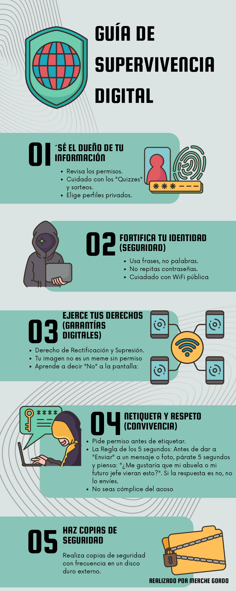

Presentación
Tradicionalmente, pensamos que el tabaco y el vapeo solo afectan a los pulmones. Sin embargo, la fisiopatología de la inhalación nos demuestra que los tóxicos inhalados viajan mucho más allá del sistema respiratorio.
En este proyecto, el alumnado actuará como un equipo de "investigadores biosanitarios".
El objetivo es que analicen de forma crítica cómo el consumo de tabaco y el uso de dispositivos de vapeo (con y sin nicotina) alteran la homeostasis de los aparatos respiratorio y digestivo.
Para el desarrollo del mismo deberán abordar diferentes puntos como puede ser el análisis y estudio de la anatomía y fisiología de ambos aparatos; una investigación química centrada en los componentes de ambas sustancias; búsqueda de mitos vs. realidad relacionados con el tabaco y el vapeo; elaboración de un producto final en forma de campaña de concienciación dirigida a sus propios compañeros.
Protección de datos y derechos digitales
